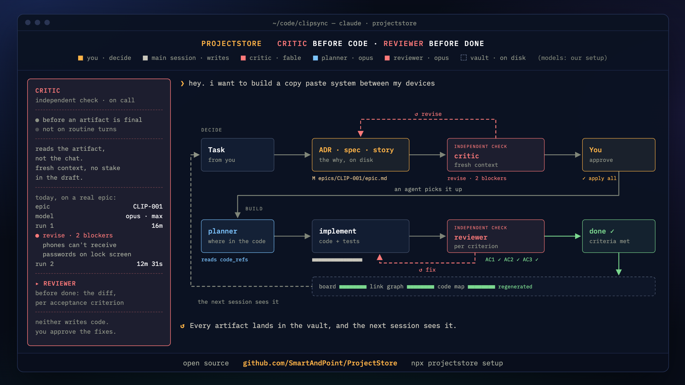

在 ADR、spec、epic、story 或设计方案写好或修改之后
找出弱点，对照出处核实每一条论断，并追问计划可能怎样失败。不说客套话。
opus · maxProjectStore 是一种方法，也是一个框架，用 AI 智能体构建任何规模的应用和服务。
首先，它是人与智能体一起工作的方式。你决定要做什么。一个智能体写计划，第二个智能体找出计划里的漏洞，你来批准。然后智能体动手构建，第三个智能体对照你的清单，逐条检查结果。
它以插件的形式安装在 Claude Code 和 Codex 中。此后你用自己的话与智能体交谈，它把决策、计划和进度以普通文件的形式保存在你的项目里。明天换一台电脑，或换一个智能体，工作都能从中断的地方接着做。
适用于 Claude Code 和 Codex。OpenCode 即将支持；之后是 Gemini、Z.ai 和 DeepSeek。
| 做法 | 什么在驱动工作 | 何时算“完成” | 长处 | 弱点 |
|---|---|---|---|---|
| 在聊天中写提示词范围：一次会话 | 与智能体的对话 | 智能体说“完成了” | 快速简单：用自己的话说出来，代码就出现了 | 没有计划，也没有检查。一切都在一次会话里，到明天就忘了 |
| 智能体记忆Mem0、claude-mem、Claude Code 自动记忆范围：一个智能体或一台机器 | 模型自己从对话中记住的事实 | 没有定义：记忆只起提醒作用 | 无需操作：智能体自己记住你的习惯和你的环境 | 它自己写入，不经你批准；只属于一个智能体或一台机器；过时的内容被悄悄丢掉，而不是连同理由一起被替换 |
| SDDspec-driven development范围：一个功能 | 一份规格说明：先写它该怎么运作，再写代码。例如 GitHub Spec Kit | 代码与规格说明一致 | 先想后写：“怎么做”写在代码之前 | 一份规格说明只覆盖一个功能：项目的决策和功能之间的联系都在它之外 |
| PDDproof-driven development范围：一次改动 | 证明：每次改动都附带它能用的证据 | 有一个测试、一次命令运行或一行代码 | “完成”由测试或命令证明，而不是靠智能体的一句话 | 它证明代码能用，而不是证明做对了东西：没有规格说明和计划，就没有可以对照检查的依据 |
| ProjectStore范围：整个项目 | 项目的决策、规格说明、story 和计划都在 git 中，彼此关联，也与代码关联 | reviewer 在每条验收标准下都找到了证据 | 四者兼得：你自己的话、项目的记忆、代码之前的规格说明和计划、代码之后的证明 — 面向整个项目、多个会话、多个人和多个智能体 | 运行这个循环要消耗 token：草稿、critic 和 reviewer 都使用你已经在付费的模型 |
ProjectStore 取各家之长：你自己的话、会话之间的记忆、代码之前的规格说明和代码之后的证明。并且它为整个项目和整个团队保留这一切，而不是只为一个功能或一台机器。
| 做法 | 多个会话 | 多个人 | 待办池和计划 | 带理由的决策 | “完成”的证明 | 容易上手 |
|---|---|---|---|---|---|---|
| 在聊天中写提示词 | 0/3 | 0/3 | 0/3 | 0/3 | 0/3 | 3/3 |
| 智能体记忆 | 2/3 | 0/3 | 0/3 | 1/3 | 0/3 | 3/3 |
| SDD | 1/3 | 2/3 | 1/3 | 1/3 | 2/3 | 2/3 |
| PDD | 1/3 | 1/3 | 0/3 | 0/3 | 3/3 | 2/3 |
| ProjectStore | 3/3 | 3/3 | 3/3 | 3/3 | 3/3 | 2/3 |
三个点：自己就能撑住；两个点：部分能撑住；一个点：要靠手工；没有点：完全不行。评分是我们自己给的。ProjectStore 在“容易上手”上得两个点：它需要 Node.js 和安装一个插件。
一个晚上能做完的任务？
是在聊天中写提示词快速简单
否项目变大了只要智能体记住你就够了吗？
是智能体记忆在这台机器上记住你
否一个功能，“怎么做”很清楚？
是SDD代码之前先写规格说明
否证明代码能用就够了吗？
是PDD用测试代替智能体的一句话
否ProjectStore — 一个持续数月的项目：多个会话、多个人、一份待办池。再加上以上所有：你自己的话、项目的记忆、代码之前的规格说明和代码之后的证明。
命令由你的智能体替你运行。你只需安装两个程序，打开一个项目文件夹，粘贴一句话。
智能体是根据你的话编写并运行代码的程序。两者任选其一：Claude（应用，其中的 Code 标签页）或 OpenAI 的 Codex。
ProjectStore 运行在 Node.js 之上：从 nodejs.org 下载 LTS 安装程序，版本 20 或更新，支持 macOS 或 Linux。新建一个空文件夹，比如叫“my-bot”，然后在智能体中打开它。
请你的智能体来做，或者在项目文件夹的终端里运行命令。
Install the projectstore plugin from https://github.com/SmartAndPoint/ProjectStore and set it up for this project.
npx projectstore setup
安装后重启智能体；Codex 会请你批准一次它的 hooks。
I want to create a stock trading bot
“我想做一个炒股机器人”
在做计划之前，智能体会问那些只有你能决定的事：
The project is empty—no code, and the vault just has README scaffolding with no epics, stories, or ADRs yet. Per CLAUDE.md, I'll start with an epic and its stories in the vault rather than code, but first I need you to make a few decisions that will shape the plan.
翻译：“项目是空的，还没有代码和笔记。我先从计划开始，而不是写代码。但首先需要你来做决定。”
Should the bot trade real money? （用真钱交易吗？）
来自 2026 年 10 月 21 日一个空项目上真实的 Claude Code 会话。智能体的文字照原样引用；选项的细节有所缩短。
到这时 critic 已经检查过了。在你说“是”之后，智能体开始构建，reviewer 对照清单检查结果。
直接用你自己的话和智能体交谈。例如：
I want to create a stock trading bot
它先问那些只有你能决定的事，然后写出计划：epic、story，以及每个 story 的清单。暂时不写代码。
Let's go with Postgres, not Mongo — we need transactions.
这个决策成为一个文件，里面有你否决的备选方案。之后的会话照它执行，而不是重新决定。
Take the next story and build it
planner 找出它该放在哪里，智能体写代码和测试，reviewer 逐条检查，全部通过才算完成。
Where were we?
新会话读取看板和进行中的 story，从那里接着往下做。
我们用 ProjectStore 构建 ProjectStore。
智能体写代码很快，重新决定已经定下的事也一样快：每个新会话都是空白开始。解决办法不是更聪明的智能体，而是“收集上下文 → 行动 → 验证”，并且针对整个项目运行，而不只针对代码。

顾问们负责检查、规划和整理，不改动任何东西。唯一的 clerk 在你说“是”之后，只保存你批准的内容。
在 ADR、spec、epic、story 或设计方案写好或修改之后
找出弱点，对照出处核实每一条论断，并追问计划可能怎样失败。不说客套话。
opus · max在 story 开工之前（story plan）
查看早先的 epic 在代码中的位置。指出改动应放在哪里、复用什么、需要注意什么，以及按什么顺序来做。
opus · max写完代码后，在提交或 story close 之前
要求每条验收标准都有证据，包括 spec 中的标准。然后检查正确性、回归和测试。
opus · max每隔一段时间、发布之前、vault 快速增长之后
找出任何规则都抓不住的问题：与已接受的 ADR 相矛盾的研究笔记、重复内容、缺失的链接、可以归档的文件。
opus · max绑定已有代码库之后运行一次
从代码、配置文件和 git 历史中找出没人写下来的决策，并附上证据，建议为它们补写 ADR。
opus · max只在命令流程内，只在你说“是”之后
原样保存你批准的内容，不多一字。然后重建看板并运行检查。不自行撰写任何内容，也不提任何问题。
sonnet · max默认模型针对的是 Claude Code。在 Codex 中，每个角色都是一个同名 skill，它会请求 Codex 启动该角色，例如 $projectstore-critic 对应 critic 角色；除非你另行设置，它使用会话的模型。
智能体在没有打开任何 story 的情况下开始改代码时，会被提醒先打开一个。功能规模的改动从 vault 开始。
需要评审的工件带着 review_status: pending，直到应用了 critic 的评审。“尚未评审”是工具能读取的状态，而不是要靠人去记。
doctor 以确定性的方式检查 vault 在机械层面的一致性。在 CI 中运行时不需要智能体，也不消耗 token。
graph.md 记录每个工件双向的链接；code-map.md 说明每个 epic 的代码在哪里。做架构选择之前，智能体会先被指向 ADR 索引。
/compact 之后，vault 回来了在 Claude Code 中，你运行 /compact 之后，会话会重新带着 vault 的概况开始，并带上在此之前对话中涉及的 vault 文件。
当另一个会话正在处理同一个 vault 时，新启动的会话开头会出现多会话警告：创建任何新内容之前先搜索。
--- type: story epic: "CHECKOUT" title: "结账时列出已保存的银行卡" status: done code_refs: ["src/billing/cards/", "tests/cards.test.ts"] closed_at: "2026-07-14T16:02:11Z" --- ## 验收标准 - [x] 已保存的银行卡排在最前 — 证据：tests/cards.test.ts:21 - [x] 银行卡被拒时显示银行给出的原因 — 证据：tests/cards.test.ts:58 - [x] 卡号不会进入日志 — 证据：tests/cards.test.ts:73
planner 在写代码之前说明了改动应放在哪里，计划在你说“是”之后写进了 story；reviewer 在代码写完后，对照每条标准检查了 diff。每一行证明都是一个测试、一条运行过的命令或一行代码。
任何智能体都可以读取这份记录，装不装插件都行：通过 CLI（它以 JSON 作答，不消耗 token），或通过 MCP 服务器的 8 个只读工具。
上下文属于团队，而不属于某个开发者的聊天。ADR 和 spec 像代码一样走合并请求。被评审的是推理过程。
两个智能体或两个人同时在同一个 vault 中工作，是常态。每个会话都知道其他会话的存在，几条简单的规则让它们互不干扰。
开发者 A 从 13:35 起一直在做 CHECKOUT。你打开了第二个会话： ⚠ Multi-session warning — 1 other projectstore session active. Run /projectstore:search <topic> before creating new artifacts. 稍后，当你的工作集中到“结账时列出已保存的银行卡”时： projectstore: this session looks like "checkout-结账时列出已保存的银行卡" → /rename checkout-结账时列出已保存的银行卡
开发者、技术负责人和 QA 基于同一套决策和标准工作。没有智能体的人只需要 GitHub 或一个 Markdown 编辑器，因为这些都只是普通文件。
整个团队都能用到这份上下文，而不只是发起聊天的那个人。
在同一个项目里，API、Web 和平台团队基于共享的 ADR 和 spec，各自推进自己的 epic。共享契约的变更，会在评审中与使用它的团队一起讨论。ProjectStore 会显示哪些 story 依赖它。
谁负责哪些工件、谁来审批契约，由团队自己决定。
规划者读决策和代码地图。实现者读 story 和 spec。评审者读 diff 和标准。每一方拿到的是自己需要的上下文，而不是别人会话的全部历史。在同一个 vault 上工作的会话会互相提醒。
启动智能体并在它们之间交接工作，是你的 harness（智能体运行框架）或编排器的职责。
组织工作的一个示例，并非实时编排
ADR、评审、待办池、验收标准、从目标到代码的关联。成熟的工程团队这样工作已有二十年。这些都不是 ProjectStore 发明的。
人的流程+智能体的速度=ProjectStore
ProjectStore 把两者结合起来。智能体的速度第一次让这套老流程的成本降了下来。流程留下的文档以文件形式放在代码旁边，给了智能体从未有过的东西：项目的上下文，向上连到目标，向下连到代码。每一步都按规则由另一个没有参与写草稿的智能体评审。速度有了记忆，记忆有了检查。
关联写在每个文件的文件头里，证据则是每条验收标准下方的一行。这些都由智能体边工作边填写。关系图展示每份文档与哪些内容相连。代码地图说明每个 epic 的代码在哪里。新的会话、新的模型或新的同事，都从这条链开始，而不是从零开始。